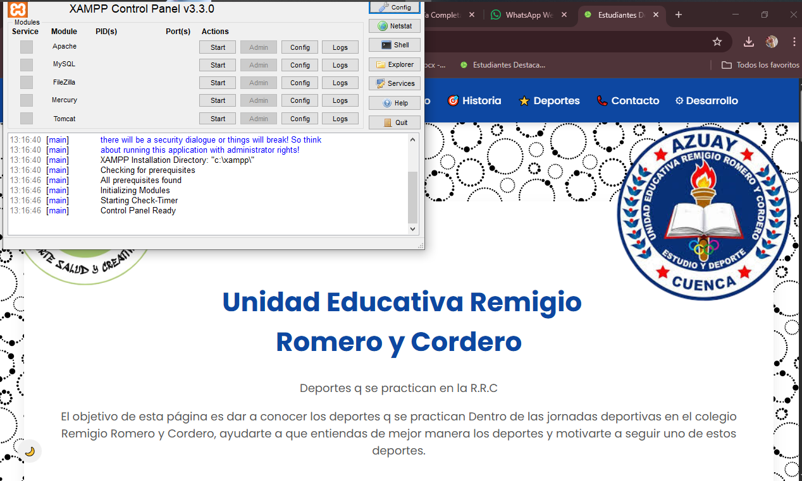
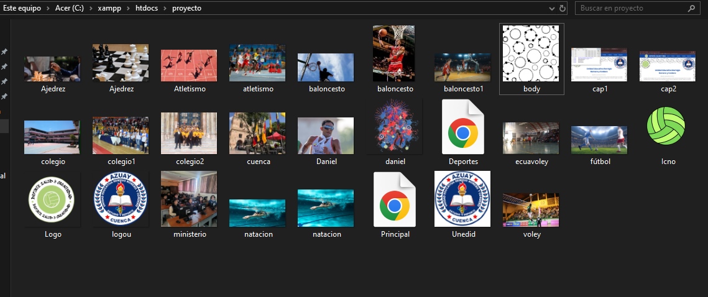

Primeramente, XAMPP debe estar correctamente descargado e instalado en la máquina. Para ello, se debe ingresar a la página oficial de Apache Friends y descargar la versión correspondiente al sistema operativo. Una vez descargado el instalador, se ejecuta y se siguen los pasos del asistente hasta finalizar la instalación.
Después de instalarlo, se debe abrir el Panel de Control de XAMPP ejecutándolo como administrador para evitar problemas de permisos. En el panel aparecerán varios servicios, pero los más importantes son:
Se debe presionar el botón Start en ambos servicios. Si se ponen en color verde, significa que están funcionando correctamente.

Para que la página se muestre en el navegador, se debe ubicar correctamente los archivos. Se debe ingresar a la ruta:
Dentro de la carpeta htdocs se crea una nueva carpeta con el nombre del proyecto. Allí se colocan los archivos HTML, CSS, JavaScript, imágenes, etc.
Luego, se abre un navegador (Chrome, Firefox, Edge, Opera, etc.) y se escribe:
Ejemplo:
Si no abre directamente, se puede escribir el nombre del archivo:
Si se trabaja con PHP, XAMPP ejecutará automáticamente el código y permitirá visualizar resultados dinámicos.
Para trabajar con bases de datos, se debe acceder a:
Desde allí se pueden crear bases de datos, tablas y administrar la información del sitio web. MySQL será el encargado de gestionar estos datos.
Cuando se realizan cambios en los archivos, solo es necesario guardar y presionar F5 o el botón de recargar en el navegador. No es necesario reiniciar el servidor, a menos que se agreguen o eliminen servicios en XAMPP.